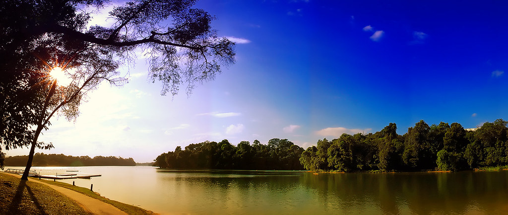
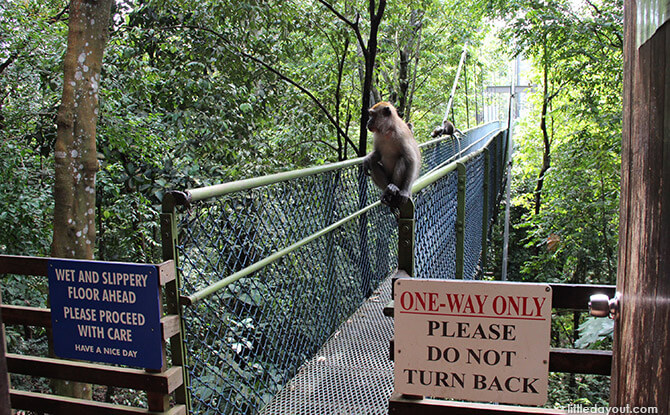
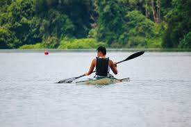
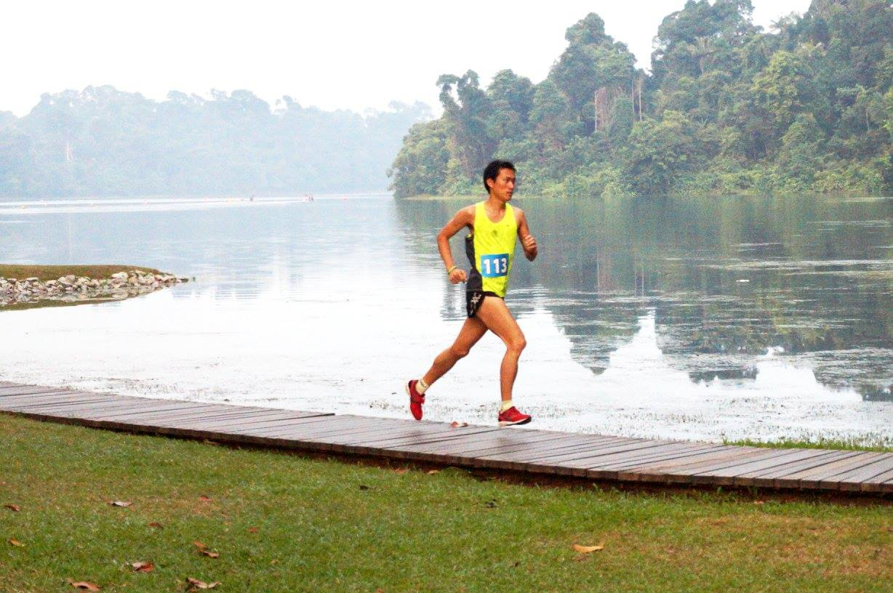
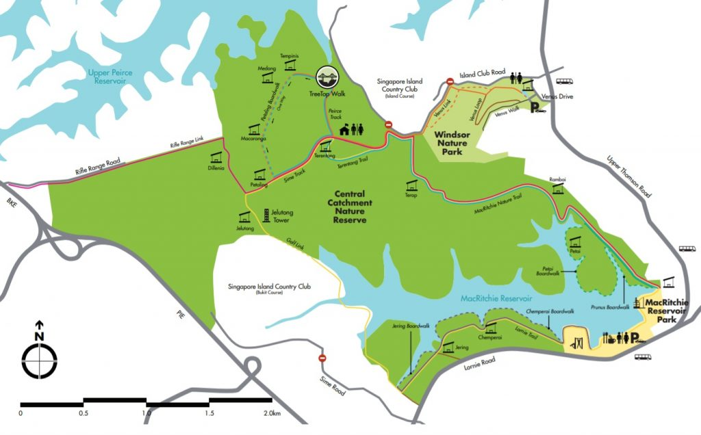

MacRitchie Reservoir Park |
||
|  | ||
|  | AboutMacritchie is the gateway to Singapore's nature reserve and is a well renowned spot for both nature and exericse lovers. Recreational activities are also found here, both inland in the form of hiking and running trails and in water with kayaks available for hire. One of the main attractions is the reservoir which is a truly serene and peaceful spot, perfect for a morning or evening stroll. For those looking for a more high energy experience, the treetop walk offers a challenging trek and is eqiupped with showers, lockers, drinking fountains and a food kiosk to cater for cross country events. Fortunately, the forest surrounding the reservoir serves as a water catchment area and is proctected from agrilcultural activites in order to ensure and maintain the quality of the water. |
|
Activites |
||
|  | There are many fun outdoor activities to get involved in at Macritchie! While the challenging terrain and picturesque scenary makes for a perfect running experience, visitors can also get involved in kayaking which is always a great activity to enjoy with friends! For those looking for a more slow paced relaxing experience, Macritchie is also a popular destination for keen bird watchers as it has five internationally near-threatened resident birds, with four being forest specialists: Grey-headed Fish-Eagle (Ichthyophaga ichthyaetus), Blue-rumped Parrot (Psittinus cyanurus) (top), Red-crowned Barbet (Megalaima rafflesii) and White-chested Babbler (Trichastoma rostratum) |
 |
Map | ||
|  | ||